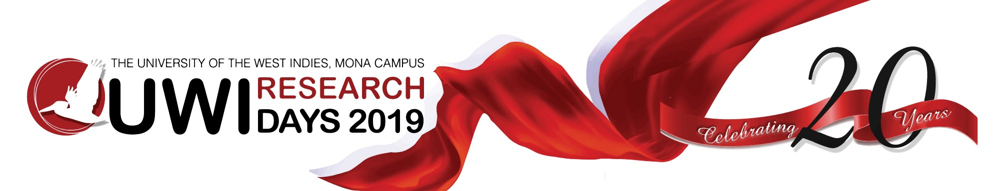

<ion-header>
  
</ion-header>

<ion-content>

<ion-content padding>
  
  <h3 class="title" text-center>Driving Research For Social And Economical Development!</h3>
  <ion-card justify-content-center>
    <ion-card-header text-center>Live Stream</ion-card-header>
    <ion-row class="frame">
      <iframe 
      src="https://www.youtube.com/embed/videoseries?list=PLLzFJW3AmqUvUsM1WO0L0v7or-aRCOlSj" 
      frameborder="0" 
      allow="accelerometer; autoplay; encrypted-media; gyroscope; picture-in-picture" 
      allowfullscreen></iframe>

    </ion-row>
    <ion-card-content margin-bottom>
      <p>Watch last year's coverage of Research Days!</p>
    </ion-card-content>
  </ion-card>

  <button  id="schedule"ion-button outline block color="uwi" (click)="goToSchedule()" margin-top>Go to Schedule
    <ion-icon name="arrow-forward"></ion-icon>
  </button>

  <ion-fab right bottom>
    <button ion-fab color="uwi"><ion-icon name="add"></ion-icon></button>
    <ion-fab-list side="left">
      <button ion-fab color="uwi" (click)="openFb()"><ion-icon name="logo-facebook"></ion-icon></button>
      <button ion-fab color="uwi" (click)="openInsta()"><ion-icon name="logo-instagram"></ion-icon></button>
    </ion-fab-list>
  </ion-fab>
  
</ion-content>

